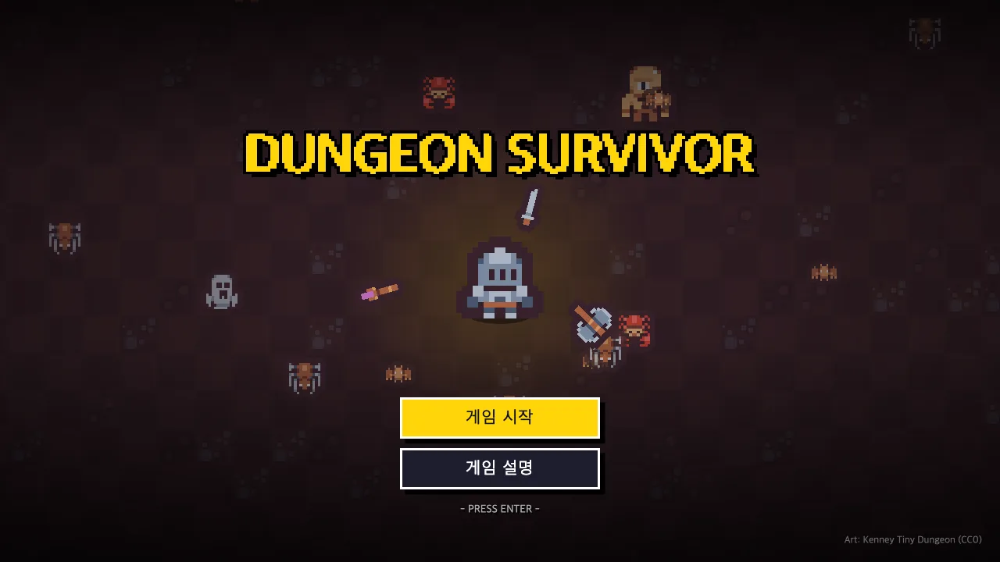
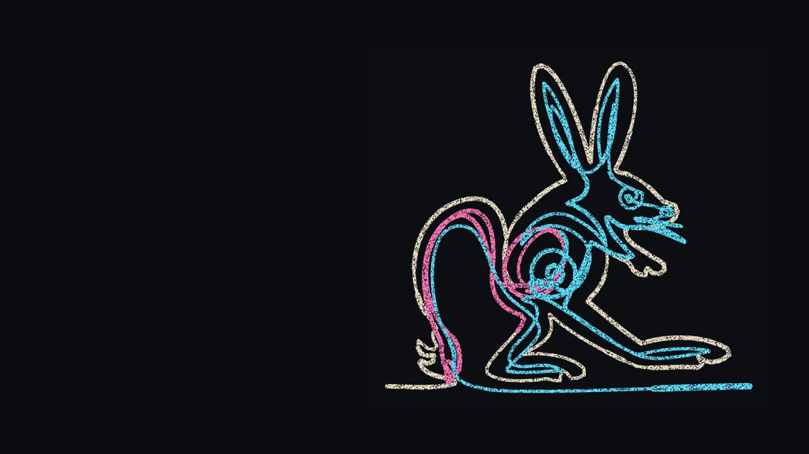
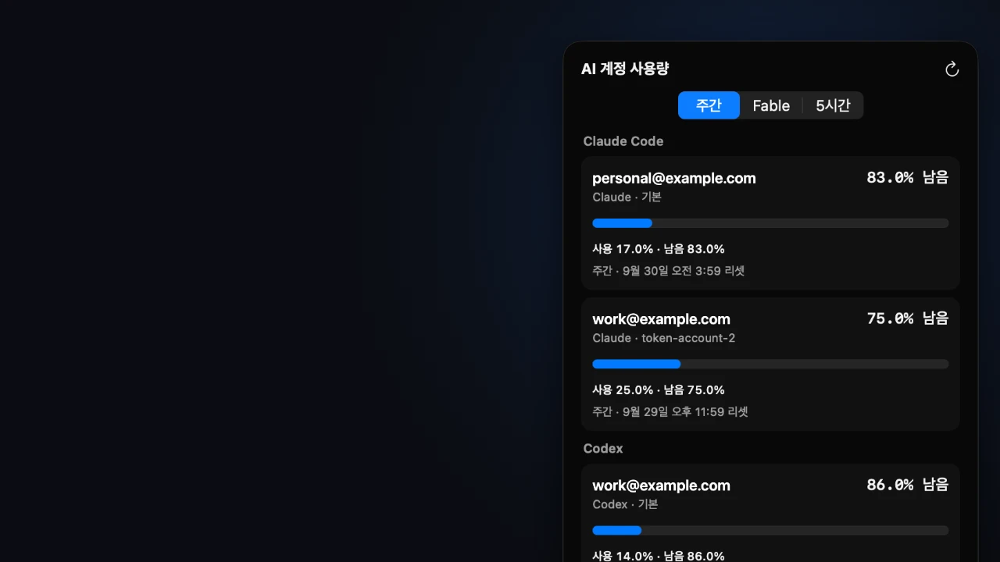
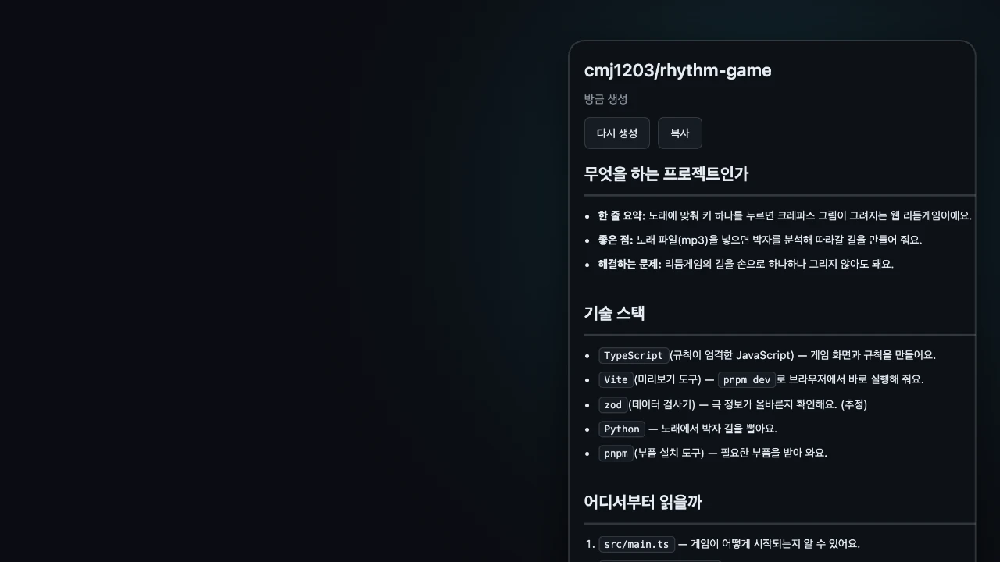
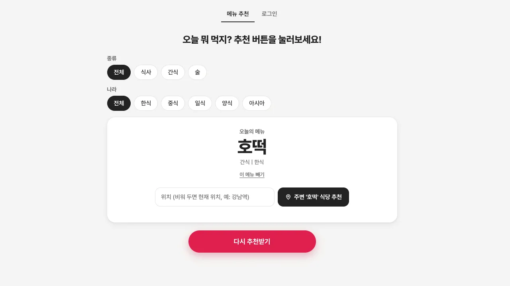

// 최민주의 포트폴리오 · 2026
WORKS
아이디어를 결과물로 완성해요!
데스크톱 앱 · 웹 게임 · 자동화 도구. 떠오른 아이디어를 진짜로 돌아가는 결과물로 만들어요. 기획부터 구현, 검증, 배포까지 한 번에 쭉 해요!
PRESS START
SELECT STAGE
눌러서 자세히 볼 수 있어요!

STAGE 01 · 게임
던전 서바이버
몰려오는 몬스터 사이에서 살아남는 뱀서라이크 웹 게임이에요. 컴퓨터와 휴대폰에서 할 수 있어요!
▶ 자세히
STAGE 02 · 게임
바탕화면 다마고치
바탕화면 물속에 사는 우파루파를 키우는 macOS · Windows 앱이에요. 먹이를 주고, 같이 놀고, 꾸밀 수 있어요!
▶ 자세히

STAGE 03 · 게임
라이브캔버스
키 하나로 박자를 맞추면 크레파스 한붓그리기가 완성되는 웹 리듬게임이에요.
▶ 자세히

STAGE 04 · 앱·도구
AI 계정 사용량 메뉴바
Claude Code와 Codex 계정마다 사용량이 얼마나 남았는지 메뉴바에서 바로 볼 수 있는 macOS 앱이에요.
● COMPLETE

STAGE 05 · 앱·도구
GitHub 레포 개요
GitHub 저장소의 README와 폴더 구조를 읽고, 어떤 프로젝트인지 한국어로 쉽게 알려 주는 Chrome 확장이에요.
● COMPLETE

STAGE 06 · 앱·도구
오메추
오늘 뭐 먹을지 메뉴를 골라 주고, 그 메뉴를 파는 주변 식당까지 찾아 주는 웹사이트예요.
● LIVE
최민주 · developer
안녕하세요, 최민주예요! 데스크톱 앱, 웹 게임, 자동화 도구를 만들어요. 작게 시작해서 돌아가는 결과물까지 완성하고, 만든 건 누구나 볼 수 있게 올려 둬요!